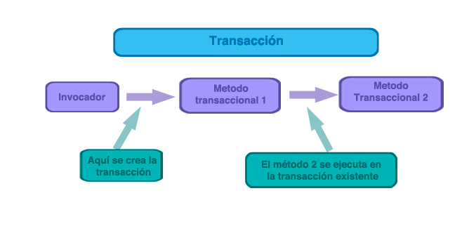
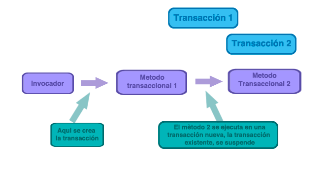
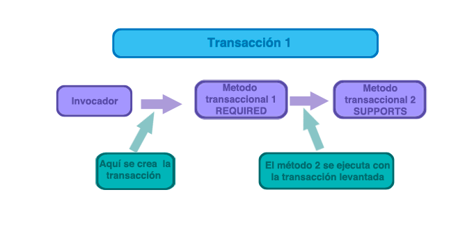
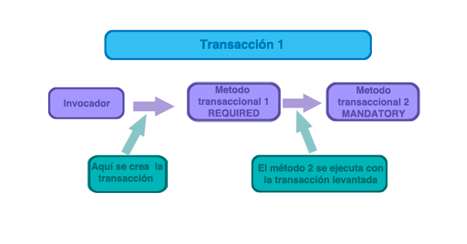
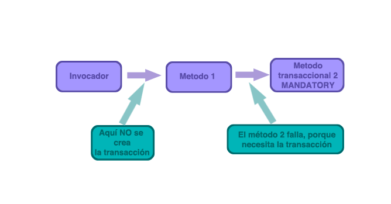
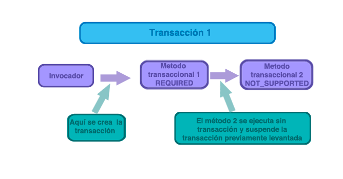
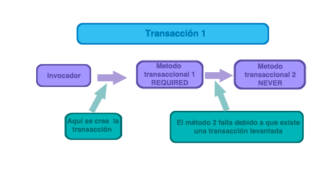
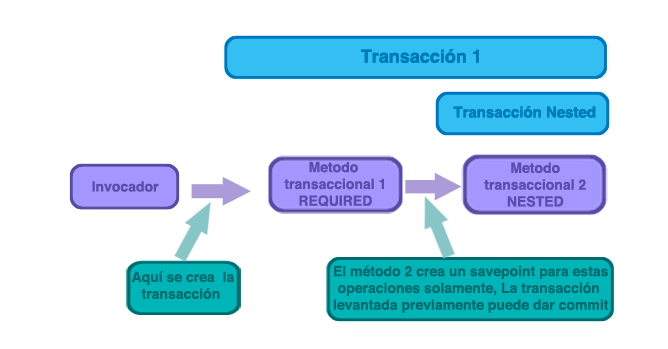

Manejo de transacciones
Cuando escribimos a una base de datos, debemos asegurarnos que la integridad de los datos es mantenida cuando se realizan cambios dentro de una transacción.
Las transacciones juegan un rol importante en el desarrollo de software, asegurando que los datos y los recursos nunca se dejan en un estado incosistente.
Conceptos esenciales
En desarrollo de software tenemos un acrónimo para referirnos a las características del desarrollo a bases de datos relacionales: ACID
- Atomic - Las transacciones se componen de una o más actividades empaquetadas en conjunto como una sola unidad de trabajo. La atomicidad asegura que todas las operaciones de la transacción ocurran o que ninguno de ellas ocurran. Si todas las actividades tienen éxito, la operación en global es procesada. Si alguna de las actividades falla, toda la transacción falla y se deshace.
- Consistent - Una vez que una transacción termina (con o sin éxito), el sistema se deja en un estado coherente con el negocio que modela. Los datos no deben corromperse con respecto a la realidad.
- Isolated - Las transacciones deben permitir que varios usuarios trabajen con los mismos datos, sin el trabajo individual de cada usuario se enrede con los demás. Por lo tanto, las transacciones deben ser aisladas unas de otras, previniendo lecturas concurrentes y escribir sobre los mismos datos que se producen. Hay que tener en cuenta que el aislamiento suele implicar bloqueo a registros y/o las tablas en una base de datos.
- Durable - Una vez que la transacción se ha completado, los resultados de la transacción deben ser permanentes para que permanezcan a pesar de cualquier tipo de caída de la aplicación. Normalmente, esto implica almacenar los resultados en una base de datos o alguna otra forma de almacenamiento persistente.
Administración de transacciones con Spring
El soporte comprensivo de transacciones de Spring es potencialmente la razón más importante de su uso e impacto dentro de la industria del software.
Beneficios:
- Modelo de programación consistente a través de diferentes API’s como JTA, JDBC, Hibernate, JPA y JDO.
- Soporte para administración declarativa de transacciones
- Una API muy simple para la administración programática de transacciones, en comparación de la API de JTA que suele ser muy compleja.
- Excelente integración con las abstracciones de acceso a datos de Spring.
Ventajas del modelo de soporte transaccional
En Java EE, solo tenemos dos elecciones para la administración de transacciones: locales o globales, ambas tienen un conjunto de características que las diferencian y tienen limitantes.
Transacciones globales
Habilitan trabajar con múltiples recursos transaccionales, tipicamente bases de datos relaciones y colas de mensajes. Los servidores de aplicaciones administran las transacciones a través de JTA. Siin embargo, una transacción manejada por JTA normalmente viene de una fuente en un JNDI, lo cual significa el uso de JNDI adicional al de JTA.
Transacciones locales
Están relacionadas a un recurso específico, como una transacción asociada a una conexión JDBC. Las transacciones locales quizá sean más fácil de usar, pero tienen desventajas significativas: no pueden trabajar a lo largo de múltiples recursos transaccionales. Por ejemplo el código que administra las transacciones usa una conexión JDBC que no puede correr con la API de JTA, debido a que el servidor de aplicaciones no está involucrado en la administración de la transacción.
Modelo consistente de programación
Spring resuelve las desventajas de las transacciones globales y locales. Habilita al desarrollador usar un modelo consistente de programación en cualquier entorno. Se escribe el código una vez, y puede beneficiarse de las diferentes estrategias de administración de transacciones en los diferentes ambientes. Y aunque provee enfoques programáticos y declarativos, los desarrolladores se inclinan más a estos útlimos.
Con el modelo programático, los desarrolladores trabajan con la abstracción de transacción de Spring. Con el modelo declarativo, tipicamente se escribe código que no tiene relación alguna con la administración de las transacciones, y no depende de la API de Spring, o de alguna otra API.
No necesitamos de un servidor de aplicaciones para el manejo de transacciones.
La administración de transacciones de Spring soporta cambios a reglas tradicionales como cuando una aplicación Java requiere un servidor de aplicaciones.
Información de utilidad.
Típicamente necesitas la capacidad de JTA del servidor de aplicaciones solamente si necesitas manejar transacciones a través de múltiples recursos, lo cual NO es un requerimiento en la mayoría de la aplicaciones. Muchas aplicaciones una sola base de datos única y escalable.
SpringFramework te da la elección de escalar la aplicación a un servidor de aplicaciones totalmente cargado cuando lo necesites.
Comprensión de los Manejadores de transacciones
Spring emplea un mecanismo de callback que abstrae la implementación de la transacción actual del código de la transacción. Y si la aplicación usa un sólo recurso persistente, entonces Spring puede usar el soporte ofrecido por un mecanismo de persistencia. Pero si la aplicación tiene el requerimiento de cubrir varios recursos para una transacción, entonces Spring puede soportar transacciones distribuidas(XA) usando implementaciones de terceros de JTA.
El elemento principal de Spring para la abstracción transaccional es la noción de una estrategia de transacion(transaction strategy), la cual está definida por la interfaz org.springframework.transaction.PlatformTransactionManager:
PlatformTransactionManager.java
Las implementaciones de esta interfaz son definidas como cualquier otro bean en el contenedor de IoC de Spring. Además manteniendo la filosofía de Spring, la excepción TransactionException puede ser arrojada por cualquier método de la interfaz, y la cual es no checada.
El método getTransaction(...) regresa un objeto TransactionStatus, dependiendo del objeto TransactionDefinition. Lo que hace TransactionStatus es representar una nueva transacción, o una transacción existente si una transacción coincidente existe en la pila de la llamada actual. La implicación de este último caso es que el TransactionStatus esta asociado con un hilo de ejecución.
La interface TransactionDefinition específica:
- Isolation - El grado el cual esta transacción esta aislada del trabajo de otras transacciones.
- Propagation - Típicamente, todo el código se ejecuta dentro de una transacción, sin embargo, tenemos la opción de definir de definir el comportamiento en el evento de que un método transaccional sea ejecutado en la misma transacción o abra una nueva transacción suspendiendo la actual.
- Timeout - Cuanto tiempo deberá correr esta transacción antes de se le haga rollback automático por superar dicho tiempo.
- Read-only status - Modifica la transacción para asegurar que no alterarán los datos en una operación.
La interface TransactionStatus provee de una forma simple para codificar la transacción y controlar el código de ejecución de la transacción, así mismo, buscar el estado de la transacción.
Definición de los manejadores de transacciones
DataSourceTransactionManager
HibernateTransactionManager
Otros manejadores de transacciones disponibles están en org.springframework.transaction:
jca.cci.connection.CciLocalTransactionManagerjms.connection.JmsTransactionManagerjms.connection.JmsTransactionManager102orm.jdo.JdoTransactionManagerorm.jpa.JpaTransactionManagertransaction.jta.OC4JJtaTransactionManagertransaction.jta.WebLogicJtaTransactionManagertransaction.jta.WebSphereUowTransactionManager
Programando transacciones
TransactionTemplateConfig.java
UserStoryServiceImpl.java
ProgrammaticTransactionsTests.java
Para poder apreciar mucho mejor el manejo de transacciones, te recomendamos habilites en tu logger algunos paquetes que reflejan el uso del DataSource:
Y obtendrás una salida similar a la siguiente:
Transacciones declarativas

UserStoryServiceImpl.java
NoTxAppCtx.xml
DeclarativeTransactionsTests.java
DeclarativeTxAppCtx.xml
DeclarativeTxWithExceptionsAppCtx.xml
Configuración de <tx:advice/>
En <tx:method/> existen atributos transaccionales ya definidos:
- El tipo de propagación es
REQUIRED por defecto
- El nivel de aislamiento(isolation) es
DEFAULT
- La transacción es de lectura/escritura
- El timeout por default de la tranasacción es establecido por el manejador de transacciones suscrito(el manejador).
- Cualquier
RuntimeException dispara el rollback de la transacción, no así, con cualquier Exception checada, a menos que se defina en las reglas.
Aunque tu puedes cambiarlos como desees.
Transacciones con anotaciones
UserStoryServiceImpl.java
TransactionsAnnotationsAppCtx.xml
AnnotatedTransactionsConfig.java
Tipos de propagación y niveles de aislamiento
REQUIRED

REQUIRES_NEW

SUPPORTS
- Si existe una transacción la usa
- Si no existe, no levanta transacción

MANDATORY
- Debe existir una transacción, si no existe falla y arroja excpeción


NOT_SUPPORTED
- Ejecuta código sin transacción
- Si existe alguna levantada entonces la suspende
- Si no existe transacción previa, no hay problema
- Solo se puede usar con el
JtaTransactionManager

NEVER
- No admite ningún tipo de transacciones
- Falla si existe alguna transacción en curso

NESTED
- Es similar a REQUIRED
- Crea una sola transacción
- Hace un
SavePoint para dar rollback sobre dicho punto
- La transacción puede dar commit, a pesar de los rollbacks de transacciones NESTED
- Sólo disponible para
DataSourceTransactionManager

Niveles de aislamiento
- ISOLATION_DEFAULT
- ISOLATION_READ_UNCOMMITTED
- ISOLATION_READ_COMMITTED
- ISOLATION_REPEATABLE_READ
- ISOLATION_SERIALIZABLE
Wrapping de excepciones
Transformando excepciones
Soporte de Anotaciones para Testing
Cualquiera de estas anotaciones puede ser usada para crear una nueva anotación que conjunte la funcionalidad deseada:
@ContextConfiguration@ContextHierarchy@ActiveProfiles@DirtiesContext@WebAppConfiguration@TestExecutionListeners@Transactional@BeforeTransaction@AfterTransaction@TransactionConfiguration@Rollback@Repeat@Timed@IfProfileValue@ProfileValueSourceConfiguration
Suponiendo el caso donde:
Podemos definir:
Creación de una nueva anotación
Y poder usarla en lugar de todo el conjunto completo:
Creación de una nueva anotación
Administración de transacciones en pruebas
En el frameworks de pruebas de Spring, las transacciones son manejadas por TransactionalTestExecutionListener, el cual es configurado por defecto aunque no se lo indiquemos. Y para habilitar el soporte de transaccciones debemos proveer de un PlatformTransactionManager en el contexto de la aplicación en la semántica de @ContextCinfiguration. Adicionalmente, debemos declarar con @Transactional las clases y métodos que deseamos sean transaccionales.
Si las transacciones no están habilitados para toda la clase de prueba, podemos anotar los métodos explícitamente con @Transactional. Para controlar si una operación debe hacer commit para un método de prueba en particular, podemos utilizar la anotación @Rollback para sobreescribir la configuración del rollback establecido por la transacción de forma general.
TestingSupportTransactionsTests.java
Información de utilidad
Te recomendamos revisar la consola del log que ejecuta la prueba, verás que ahora los métodos de la prueba son transaccionales.